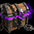
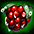

冬ハンティング・年末年始イベント2025
日本のイベント攻略 ＞ 冬ハンティング・年末年始イベント2025
■開催期間
冬ハンティング・ログイン：2025年12月11日（木）メンテナンス後～2026年1月22日（木）メンテナンス前。サンタ骸骨は12月30日（火）メンテナンス前までです。
■雪だるまの人形と交換所
Lv301～1999は自分のLv－100以上、Lv2000～2200はLv－50以上のモンスターから、雪だるまの人形を確率で獲得します。週100個まで、毎週月曜0時に更新。取引・銀行取引不可です。
ミニマップのEVENT SHOPから交換し、1月22日のメンテナンス前までに使います。
| アイテム名 | 必要な人形 | 期間中上限 | アイテム詳細 |
|---|---|---|---|
| 60 | 1回 | 解放済みのNxオプションをランダムに変換。一部オプションの出現率を高めた改良型。追加リング・補助武器・投擲爪・壊れた装備には使用不可。銀行取引不可。 | |
| 50 | 1回 | 解放済みのNxオプションをランダムに変換。追加リング・補助武器・投擲爪・壊れた装備には使用不可。銀行取引不可。 | |
| 40 | 1回 | 封印された力を解放。3種の追加効果から選択でき、失敗時も既存の解放を維持する。成功率は低い。銀行取引不可。 | |
| ULTスロット再錬成道具箱 x1 | 40 | 1回 | Nxユニークの錬成オプション制限数を4個へ変更。封印オプション数は再錬成される。 |
| 30 | 1回 | R～LR等級のクリーチャーを1体召喚。クリスマスに関連するクリーチャーが出やすい。銀行取引不可。 | |
| 30 | 1回 | 封印された力を解放。3種の追加効果から選択でき、失敗時の装備破壊を防ぐ。銀行取引不可。 | |
| 30 | 1回 | 1個以上のオプションを解放したNxユニークに使用し、解放済みオプションをランダムに変換。追加リング・補助武器・投擲爪・壊れた装備には使用不可。銀行取引不可。 | |
| 30 | 3回 | 古竜の魔石を1個生成。高ランクを保証する品ではない。銀行取引不可。 | |
| 20 | 5回 | レイド経験値をLv1～849は2倍、850～1999は6倍にする。Lv2000以上は経験値を得ず消費。銀行取引不可。 ※取引不可 | |
| 20 | 1回 | Nxユニークの封印オプションを10%で1つ解放。失敗時はオプション数を変更しない。銀行取引不可。 | |
| 20 | 1回 | 錬成素材。クリーチャー経験値の育成素材としても使用可能。 | |
| 20 | 3回 | フェーズストーンの錬成素材。 ※取引不可 | |
| 20 | 2回 | 効果・使用条件 ※取引不可 | |
| 10 | 3回 | クリーチャー経験値の育成素材。 | |
| 5 | 5回 | Lv2000未満のモンスター討伐経験値を60分間150%増加。他の果実と併用可能。銀行取引不可。 | |
| 2 | 5回 | 同じタイプの水光石を10個獲得。 | |
| 1 | 5回 | HP・CPを80%回復。 |
■サンタ骸骨
12月11日メンテナンス後～12月30日メンテナンス前。闇商人の外見がサンタ骸骨に変わり、倒すとサンタ骸骨のプレゼントが100%ドロップします。プレゼントは取引・銀行取引不可、有効期限は1月22日10:00です。
| アイテム名 | アイテム説明 |
|---|---|
| R～LR等級のクリーチャーを1体召喚。クリスマスに関連するクリーチャーが出やすい。銀行取引不可。 | |
| 冬の期間に関連するネフォンクリーチャーを召喚。銀行取引不可。 | |
| ランダムなオプションのお守りを獲得。お守りの付与には成功・失敗がある。 | |
 闇商人の箱 | 闇商人の品を獲得する箱。 |
| ランダムゴールド袋[1万～10万] | 効果・使用条件 |
12月21日～31日は古都中央噴水の外見もクリスマス仕様になります。オーラの外見変更も同時開催です。
■全28日のログイン報酬
各日の報酬を受け取って次の日へ進めます。受取先は、道具を使うキャラクターと銀行取引の可否を確認して選びましょう。
| 日数 | アイテム名 | 個数 | アイテム詳細 |
|---|---|---|---|
| 1日 |  新鮮なサンベリー | 1 | Lv2000未満のモンスター討伐経験値を70分間110%増加。 |
| 2日 | ファーストショートヒール ポーション | 3 | HPを30%即時回復。再使用まで時間が必要。 |
| 3日 | 3 | 10分間CPを最大値に維持。同効果の重複使用不可。 | |
| 4日 | 1 | 復活時の死亡ペナルティーを90%短縮し、30秒間最大HPを200%にする。 | |
| 5日 | 1 | 装備の能力を強化する石。 | |
| 6日 | 10 | 冒険家協会の交換用コイン。 ※取引不可 | |
| 7日 | 1 | 指定した場所へ移動。銀行取引不可。 | |
| 8日 | 新鮮なサンベリー | 1 | Lv2000未満のモンスター討伐経験値を70分間110%増加。 |
| 9日 | 1 | ミニペットを1体召喚。契約期間30日。銀行取引不可。 | |
| 10日 | 1 | レイド経験値をLv1～849は2倍、850～1999は6倍にする。Lv2000以上は経験値を得ず消費。銀行取引不可。 ※取引不可 | |
| 11日 | 1 | 装備の能力を強化する石。 | |
| 12日 | 50 | 魔力溶解などで得られるインク。図案書の作成などに使用。 | |
| 13日 | 1 | フェーズストーンの錬成素材。 ※取引不可 | |
| 14日 | 2 | 装備を製錬し、出現する称号の数を増やす。銀行取引不可。 | |
| 15日 | 1 | 復活時の死亡ペナルティーを90%短縮し、30秒間最大HPを200%にする。 | |
| 16日 | 1 | Lv2000未満のモンスター討伐経験値を60分間150%増加。他の果実と併用可能。銀行取引不可。 | |
| 17日 | 3 | HPを100%即時回復。連続使用不可。 | |
| 18日 | 3 | 10分間CPを最大値に維持。同効果の重複使用不可。 | |
| 19日 | 1 | 復活時の死亡ペナルティーを90%短縮し、30秒間最大HPを200%にする。 | |
| 20日 | 1 | レイド経験値をLv1～849は2倍、850～1999は6倍にする。Lv2000以上は経験値を得ず消費。銀行取引不可。 ※取引不可 | |
| 21日 | 1 | 古竜の魔石を1個生成。高ランクを保証する品ではない。銀行取引不可。 | |
| 22日 | 2 | ランダムなオプションのお守りを獲得。お守りの付与には成功・失敗がある。 | |
| 23日 | 1 | Lv2000未満のモンスター討伐経験値を60分間150%増加。他の果実と併用可能。銀行取引不可。 | |
| 24日 | 50 | ディメンション・ハブで得られる装備強化素材。 ※取引不可 | |
| 25日 | 1 | 装備の能力を強化する石。 | |
| 26日 | 1 | フェーズストーンの錬成素材。 ※取引不可 | |
| 27日 | 1 | 古竜の魔石を1個生成。高ランクを保証する品ではない。銀行取引不可。 | |
| 28日 | 1 | ネフォンクリーチャーをランダムで召喚。銀行取引不可。 |
■クリスマス・年末年始のチャット支援
クリスマス
| バフ種類 | 日付 | キーワード/バフ効果 |
|---|---|---|
| 暖かい言葉の支援 | 12月11日(木)メンテナンス後 ~ 12月28日(日)23:59まで | メリークリスマス 暖かい言葉の支援 |
| 優しい言葉の支援 | 12月11日(木)メンテナンス後 ~ 12月28日(日)23:59まで | サンタクロース 優しい言葉の支援 |
年末年始
| バフ種類 | 日付 | キーワード/バフ効果 |
|---|---|---|
| 暖かい言葉の支援 | 2025年12月30日(火)メンテナンス後 ~ 2026年1月8日(木)23:59まで | あけおめ 暖かい言葉の支援 |
| 優しい言葉の支援 | 2025年12月30日(火)メンテナンス後 ~ 2026年1月8日(木)23:59まで | 初日の出 優しい言葉の支援 |
期間中にキーワードを白チャットで発言すると対応する支援を受けます。
■おすすめの進め方
週100個の予算を装備に合わせる
| 目的 | 必要な人形 | 確保する例 |
|---|---|---|
| 解放オプションを変更 | 改60＋通常50＝110個 | 通常ドロップの週100個に、次の週10個を足す |
| 封印解放を進める | レプリカ40＋特製30＝70個 | 残り30個をコクーンなどへ回す |
| スロットの作り直し | ULTスロット再錬成道具1個に人形40個 | 今使うNx装備がある人向け |
解放済みオプションを変える人は変換器、これから封印解放する人は道具箱と、使う装備に合わせて選べます。残りの人形は1月22日までに育成品や回復品へ回す形です。
サンタ骸骨は12月30日、交換は1月22日まで
サンタ骸骨は先に終わるので、12月30日までに狩りと重ねてプレゼントを回収します。ログインは28日目のソーラーコクーン[E]まで受け取り、人形とプレゼントの期限は1月22日までに確認しましょう。